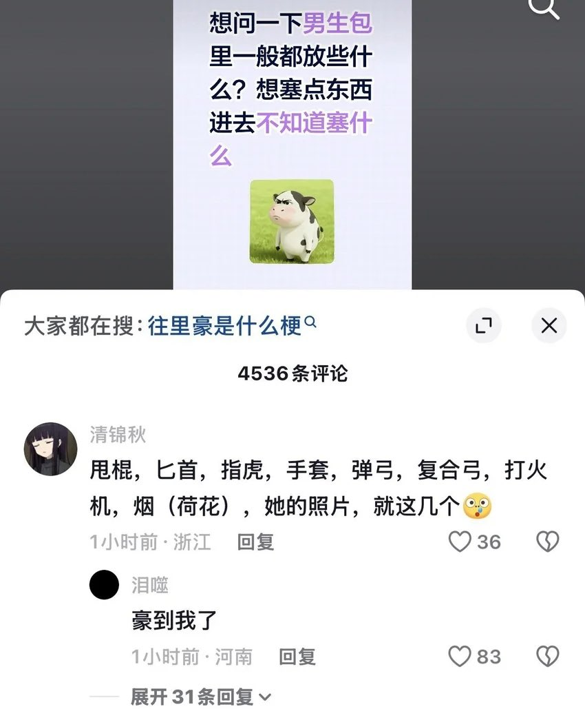

👾𝓽𝓱𝓮𝓯𝓸𝓻𝓮𝓿𝓮𝓻𝓲𝓻𝓲𝓼🍥
@theforeveriris
@YunJiu 我说：一把精准采集镐子，一把时运镐子，一把无限三发弓，一支箭，一把末影弓，若干船，一把锋利火焰附加剑，工作台和熔炉（？和我的旅行背包说去吧），一张装着女仆的魂符，传送石，吸血权杖，月光蠕虫女王，若干附魔金苹果或永恒烈焰牛排，若干夜视药水有人懂吗（）

雲鳩
@YunJiu
一把精准采集镐子，一把时运镐子，一把弓，3组箭，一把锋利剑，一桶岩浆，一桶水，一个工作台，一个熔炉，一组金胡萝卜，一组原木，一组炭 https://t.co/rvS3NLG49k